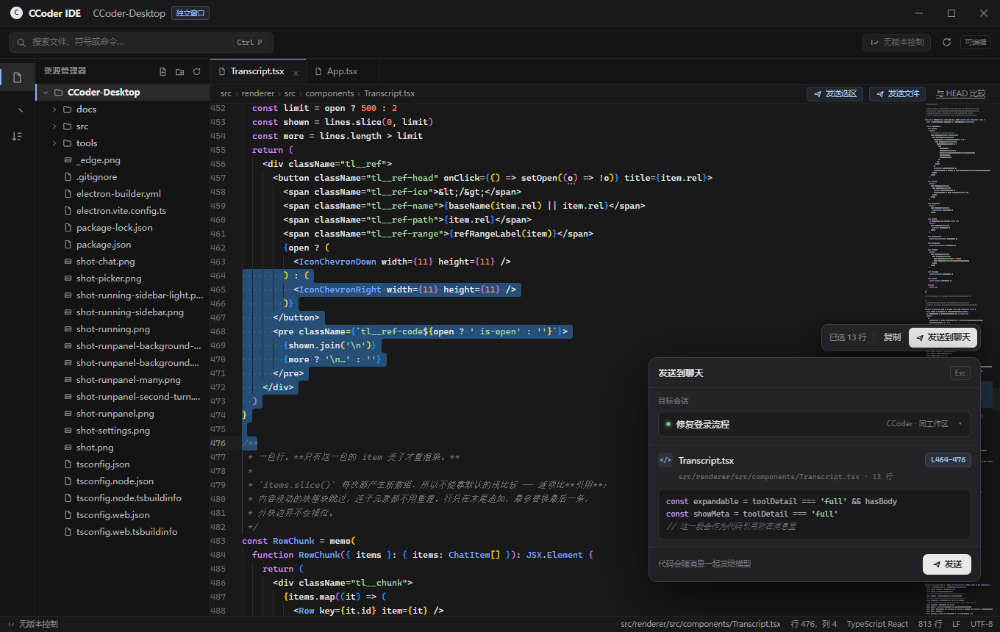
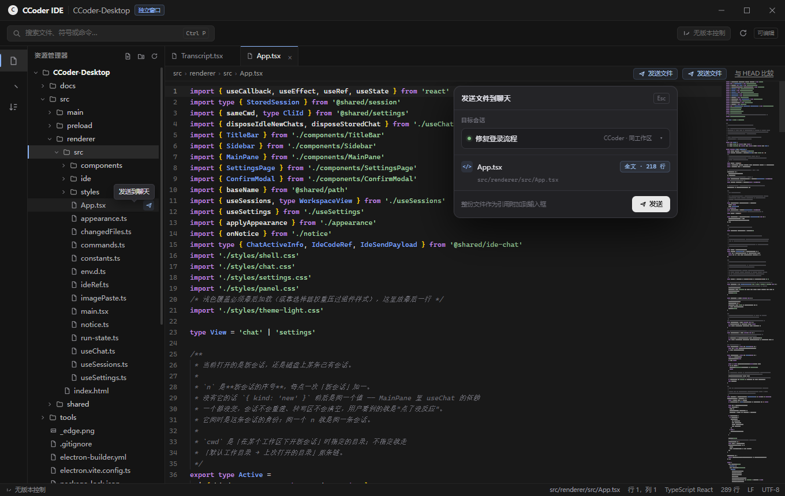
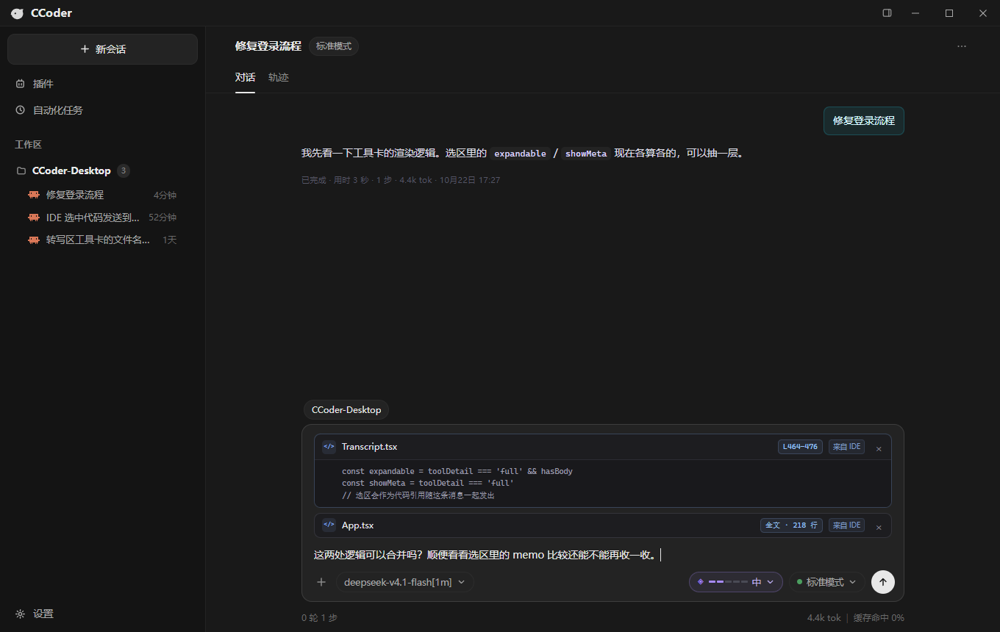

Design review · v1
IDE → 聊天：代码 / 文件发送
选中一段代码或整个文件，放进同工作区的聊天输入框，作为消息的代码引用。下面是三个场景的真实界面效果。
3
个场景
独立 IDE 窗口
未实现 · 设计稿
1
选中 / 定位
代码选区，或整份文件
→
2
确认目标
同工作区会话 · 代码预览
→
3
进入输入框
补说明后随消息发出
1
选中代码发送
浮动条 + 确认层

2
整个文件发送
资源管理器 + 面包屑两个入口

3
聊天框接收
输入框上方的代码引用卡

需要你拍板
已按推荐项预选，选完复制回聊天即可
1. 默认目标会话
推荐
IDE 窗口是独立窗口，「对应的聊天框」如何确定？
同工作区当前活跃会话
和 IDE 同一个 cwd 的那条聊天；下拉可切换同工作区其他会话。
同工作区最近活跃会话
不看窗口焦点，按最近一次对话时间挑。
每次都手动选择
确认层必须选一次目标，避免发错会话。
2. 超长选区
推荐
选区过大时怎么处理？
超过 500 行时提示
让用户选「只发前 500 行」或「改发整文件」。
静默截断到 500 行
不打断操作，但用户可能不知道被截了。
不限制，原样发送
交给用户自己判断，可能一次塞进过多 token。
3. 整文件发送的内容
推荐
发送整个文件时，模型拿到什么？
默认全文
文件名 + 完整内容；diff 作为后续版本的可选入口。
默认与 HEAD 的 diff
只看改动，适合代码审查；新文件没有 diff。
确认层二选一
全文 / diff 每次显式选择。
4. 发送后的反馈
推荐
引用进入输入框后，IDE 侧要不要提示？
轻提示，2 秒消失
「已附加到聊天 · 修复登录流程」。
不提示，直接切换窗口
聊天窗口被带到前台，用户自然看到引用卡。
5. 其他调整
对布局、文案、入口位置有想法可以直接写在这里。
复制我的选择
已复制，粘贴回聊天即可
重置为推荐项
×